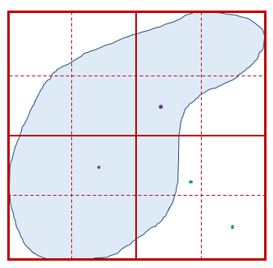
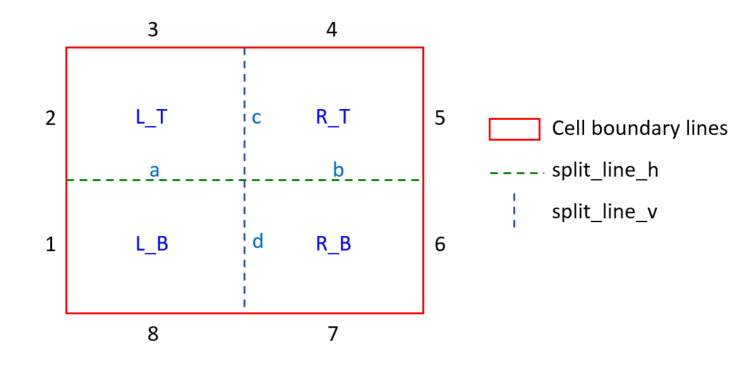
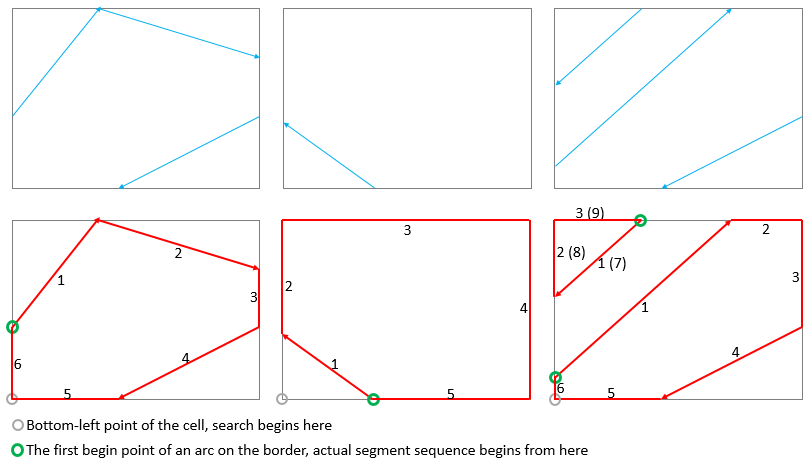
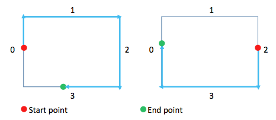
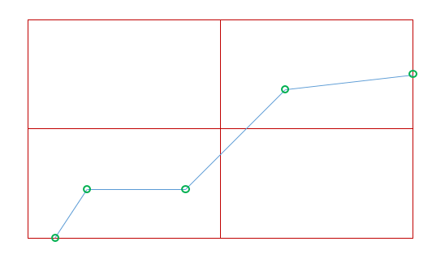

Fast Point in Polygon Testing Method
| Author: Hu Shao shaohutiger@gmail.com |
|---|
| Begin test without quad-tree-structure Test without quad-tree-structure finished, time used = 23.204s |
Begin test with quad-tree-structure Test with quad-tree-structure finished, time used = 0.451s
:::
:::
### Validate the correctness of this quad-tree-structure
::: {.cell execution_count=12}
``` {.python .cell-code}
# polygons = ps.open("data/Huangshan_region.shp") # read the research region shape file
# research_region = polygons[0] # set the first polygon as research polygon
# len(research_region.vertices)
vertices = get_ring_from_file("data/study_region_huangshan_point.txt")
print "Study region read finished, with vertices of " + str(len(vertices))
huangshan = Ring(vertices)
points = []
bbox = huangshan.bounding_box
for i in range(0, 1000):
x = random.uniform(bbox[0], bbox[2])
y = random.uniform(bbox[1], bbox[3])
points.append([x, y, True])
print str(len(points)) + " random points generated"
# First, test if these points are inside of the polygon by using the conventional method, record the result
for point in points:
is_in = huangshan.contains_point((point[0], point[1]))
point[2] = is_in
# Then, build the quad-tree and do the test again. Compare the results of two methods.
count_error = 0
huangshan.build_quad_tree_structure()
for point in points:
is_in = huangshan.contains_point((point[0], point[1]))
if point[2] != is_in:
print "Error found!!!"
count_error += 1
if count_error == 0:
print "finished ==================== no error found"
else:
print "finished ==================== ERROR FOUND"Study region read finished, with vertices of 3891
1000 random points generated
finished ==================== no error found:::
Algorithm for building quadtree cells for study area
A huge number of points will be simulated and test if falls in the study area in the real case. This calculation process is very computing intensive. Especially when the boundary of study area is complex and contains a lot of segments, or the simulation time is also large.
In order to fast decide whether a point is contained in the study area, we can prepare an grid structure which divide the study area into quadtree based regular rectangles. Each rectangles will have a specific status from [‘in’, ‘out’, ‘maybe’]. After we prepared this kind of grid structure, deciding whether a points falls in the study area will be very easy: first, allocate the point into a specific cell. For the cell with different status:
- in: the point must be in the study area
- out: the point must not be in the study area
- maybe: decide if the points falls into the study area by some following-up calculation. However, the small polygon contains much less boundary segments, the calculation will be much easier. What’s more, this kind of grids only take over a very small part of the whole grids

Process of duadtree dividing of the study area:
Treat the boundary of the study area as arc. Each time of dividing the study area means use two straight lines (on horizontal and one vertical) to split a big rectangle (cell) into 4 smaller ones. During this process, the arc should also be used to intersect with the straight lines and break into small segments. Different segments should belong to different cells and can be used to determine the status of the cell (as we mentioned: in, out or maybe inside of the study area.) Repeat this process until the cell’s size is small enough.
During the dividing, there are some special properties of the arcs we need to know:
- Point order of the arcs MUST be clockwise
- The two end-points of each arc MUST lie on the borders of the cell
- When a arc goes in a cell, it MUST goes out from the same one
- The intersection points MUST be lying on the inner-boundaries which are used to divide the cell into 4 sub-cells - Use the intersection points to split the arcs into small ones
- No need to store cell boundaries as arcs, store the intersection points, points’ relative location from
The following image depicts the categorize rule of cell boundary when being divided into sub cells:
cell_boundary_category_rule

segment_sequence_search_rule

In the situations that there are some arcs intersect with a cell and we need to extract the segment squence, here is the rule:
1. Start on the bottom-left point of the cell, go clockwise to search points.
2. Find the first arc-begin-point on the cell’s border. The actual segment sequence begin from here.
3. Go alone the arc until the end point on the border. Then go alone the cell’s border until find next arc-begin-point.
4. Repeat Step.3 until reach the first arc-begin-point at Step.2. Search stop.
From the image we can see that the red border lines also belong to the segment sequence.
During the quadtree dividing, when there is a cell who doesn’t intersect with any arc, we need to determine whether this cell is totally within the study area or not. we Can use the method above to determine: If this cell share a border which belongs to other cells’ segment sequence, then this cell is totally within the study area; vice versa
extract_connecting_boders_between_points

situation_segment_intersect_with_two_split_line 
Under the sitiation that a single segment intersects with both split-lines. This kind of situation should be carefully treated.
Reference
Point in Polygon Strategies http://erich.realtimerendering.com/ptinpoly/
Samet, Hanan. Foundations of multidimensional and metric data structures. Morgan Kaufmann, 2006.
Jiménez, Juan J., Francisco R. Feito, and Rafael J. Segura. “A new hierarchical triangle-based point-in-polygon data structure.” Computers & Geosciences 35, no. 9 (2009): 1843-1853.
http://stackoverflow.com/questions/12881848/draw-polygons-more-efficiently-with-matplotlib
http://matplotlib.org/api/collections_api.html
http://materializecss.com/color.html